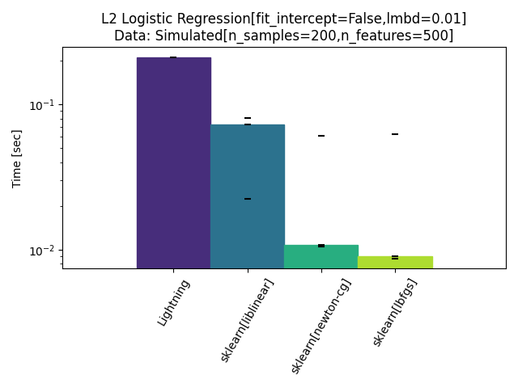

<!DOCTYPE html>

<html>
  <head>
    <meta charset="utf-8" />
    <meta name="viewport" content="width=device-width, initial-scale=1.0" /><meta name="generator" content="Docutils 0.17.1: http://docutils.sourceforge.net/" />

    <title>Run benchmark from a script &#8212; benchopt 1.1.1.dev31 documentation</title>
    <link rel="stylesheet" type="text/css" href="../_static/pygments.css" />
    <link rel="stylesheet" type="text/css" href="../_static/bootstrap-sphinx.css" />
    <link rel="stylesheet" type="text/css" href="../_static/style.css" />
    <link rel="stylesheet" type="text/css" href="../_static/gallery.css" />
    <link rel="stylesheet" type="text/css" href="../_static/gallery-binder.css" />
    <link rel="stylesheet" type="text/css" href="../_static/gallery-dataframe.css" />
    <link rel="stylesheet" type="text/css" href="../_static/gallery-rendered-html.css" />
    <script data-url_root="../" id="documentation_options" src="../_static/documentation_options.js"></script>
    <script src="../_static/jquery.js"></script>
    <script src="../_static/underscore.js"></script>
    <script src="../_static/doctools.js"></script>
    <link rel="index" title="Index" href="../genindex.html" />
    <link rel="search" title="Search" href="../search.html" />
<meta charset='utf-8'>
<meta http-equiv='X-UA-Compatible' content='IE=edge,chrome=1'>
<meta name='viewport' content='width=device-width, initial-scale=1.0, maximum-scale=1'>
<meta name="apple-mobile-web-app-capable" content="yes">
<script type="text/javascript" src="../_static/js/jquery-1.11.0.min.js "></script>
<script type="text/javascript" src="../_static/js/jquery-fix.js "></script>
<script type="text/javascript" src="../_static/bootstrap-3.3.7/js/bootstrap.min.js "></script>
<script type="text/javascript" src="../_static/bootstrap-sphinx.js "></script>

  </head><body>

  <div id="navbar" class="navbar navbar-default navbar-fixed-top">
    <div class="container">
      <div class="navbar-header">
        <!-- .btn-navbar is used as the toggle for collapsed navbar content -->
        <button type="button" class="navbar-toggle" data-toggle="collapse" data-target=".nav-collapse">
          <span class="icon-bar"></span>
          <span class="icon-bar"></span>
          <span class="icon-bar"></span>
        </button>
        <a class="navbar-brand" href="../index.html">
          benchopt</a>
        <span class="navbar-text navbar-version pull-left"><b>1.1.1.dev31</b></span>
      </div>

        <div class="collapse navbar-collapse nav-collapse">
          <ul class="nav navbar-nav">
            
                <li><a href="../cli.html">CLI</a></li>
                <li><a href="../api.html">API</a></li>
                <li><a href="../how.html">Write a benchmark</a></li>
                <li><a href="https://benchopt.github.io/results">Results</a></li>
                <li><a href="../whats_new.html">What's new</a></li>
                <li><a href="https://github.com/benchopt/benchOpt">GitHub</a></li>
            
            
              <li class="dropdown globaltoc-container">
  <a role="button"
     id="dLabelGlobalToc"
     data-toggle="dropdown"
     data-target="#"
     href="../index.html">Site <b class="caret"></b></a>
  <ul class="dropdown-menu globaltoc"
      role="menu"
      aria-labelledby="dLabelGlobalToc"><ul>
<li class="toctree-l1"><a class="reference internal" href="../cli.html">Command Line Interface (CLI) Documentation</a></li>
<li class="toctree-l1"><a class="reference internal" href="../api.html">Python API Documentation</a></li>
<li class="toctree-l1"><a class="reference internal" href="../how.html">Write a benchmark</a></li>
<li class="toctree-l1"><a class="reference internal" href="../publish.html">Publish benchmark results</a></li>
<li class="toctree-l1"><a class="reference internal" href="../config.html">BenchOpt configuration</a></li>
<li class="toctree-l1"><a class="reference internal" href="../whats_new.html">What’s new</a></li>
<li class="toctree-l1"><a class="reference external" href="https://github.com/benchopt/benchopt">Fork BenchOpt on Github</a></li>
</ul>
</ul>
</li>
              
            
            
            
            
            
          </ul>

          
            
<form class="navbar-form navbar-right" action="../search.html" method="get">
 <div class="form-group">
  <input type="text" name="q" class="form-control" placeholder="Search" />
 </div>
  <input type="hidden" name="check_keywords" value="yes" />
  <input type="hidden" name="area" value="default" />
</form>
          
        </div>
    </div>
  </div>

<div class="container">
  <div class="row">
      <div class="col-md-3">
        <div id="sidebar" class="bs-sidenav" role="complementary"><ul>
<li><a class="reference internal" href="#">Run benchmark from a script</a></li>
</ul>

        </div>
      </div>
    <div class="body col-md-9 content" role="main">
      
  <div class="sphx-glr-download-link-note admonition note">
<p class="admonition-title">Note</p>
<p>Click <a class="reference internal" href="#sphx-glr-download-auto-examples-plot-run-benchmark-py"><span class="std std-ref">here</span></a>
to download the full example code</p>
</div>
<section class="sphx-glr-example-title" id="run-benchmark-from-a-script">
<span id="sphx-glr-auto-examples-plot-run-benchmark-py"></span><h1>Run benchmark from a script<a class="headerlink" href="#run-benchmark-from-a-script" title="Permalink to this headline">¶</a></h1>
<ul class="sphx-glr-horizontal">
<li>
</li>
<li>
</li>
<li>
</li>
<li>
</li>
<li>
</li>
<li>
</li>
<li>
</li>
<li>
</li>
</ul>
<p class="sphx-glr-script-out">Out:</p>
<div class="sphx-glr-script-out highlight-none notranslate"><div class="highlight"><pre><span></span>BenchOpt is running
Simulated[n_samples=200,n_features=500]
|--L2 Logistic Regression[fit_intercept=False,lmbd=1.0]
|----Lightning: done
|----sklearn[liblinear]: done
|----sklearn[newton-cg]: done
|----sklearn[lbfgs]: done
|--L2 Logistic Regression[fit_intercept=False,lmbd=0.01]
|----Lightning: done
|----sklearn[liblinear]: done
|----sklearn[newton-cg]: done
|----sklearn[lbfgs]: done
Saving result in: /home/circleci/project/benchmarks/benchmark_logreg_l2/outputs/benchopt_run_2021-09-07_17h22m22.csv
Save suboptimality_curve plot of objective_value for Simulated[n_samples=200,n_features=500] and L2 Logistic Regression[fit_intercept=False,lmbd=1.0] as: /home/circleci/project/benchmarks/benchmark_logreg_l2/outputs/3b85cf83eca78303a82706d8b8e48810_objective_value_suboptimality_curve.pdf
Save relative_suboptimality_curve plot of objective_value for Simulated[n_samples=200,n_features=500] and L2 Logistic Regression[fit_intercept=False,lmbd=1.0] as: /home/circleci/project/benchmarks/benchmark_logreg_l2/outputs/3b85cf83eca78303a82706d8b8e48810_objective_value_relative_suboptimality_curve.pdf
Save objective_curve plot of objective_value for Simulated[n_samples=200,n_features=500] and L2 Logistic Regression[fit_intercept=False,lmbd=1.0] as: /home/circleci/project/benchmarks/benchmark_logreg_l2/outputs/3b85cf83eca78303a82706d8b8e48810_objective_value_objective_curve.pdf
Save histogram plot of objective_value for Simulated[n_samples=200,n_features=500] and L2 Logistic Regression[fit_intercept=False,lmbd=1.0] as: /home/circleci/project/benchmarks/benchmark_logreg_l2/outputs/3b85cf83eca78303a82706d8b8e48810_objective_value_histogram.pdf
Save suboptimality_curve plot of objective_value for Simulated[n_samples=200,n_features=500] and L2 Logistic Regression[fit_intercept=False,lmbd=0.01] as: /home/circleci/project/benchmarks/benchmark_logreg_l2/outputs/e9abaa2252e34f2cf866bb150aa81ece_objective_value_suboptimality_curve.pdf
Save relative_suboptimality_curve plot of objective_value for Simulated[n_samples=200,n_features=500] and L2 Logistic Regression[fit_intercept=False,lmbd=0.01] as: /home/circleci/project/benchmarks/benchmark_logreg_l2/outputs/e9abaa2252e34f2cf866bb150aa81ece_objective_value_relative_suboptimality_curve.pdf
Save objective_curve plot of objective_value for Simulated[n_samples=200,n_features=500] and L2 Logistic Regression[fit_intercept=False,lmbd=0.01] as: /home/circleci/project/benchmarks/benchmark_logreg_l2/outputs/e9abaa2252e34f2cf866bb150aa81ece_objective_value_objective_curve.pdf
Save histogram plot of objective_value for Simulated[n_samples=200,n_features=500] and L2 Logistic Regression[fit_intercept=False,lmbd=0.01] as: /home/circleci/project/benchmarks/benchmark_logreg_l2/outputs/e9abaa2252e34f2cf866bb150aa81ece_objective_value_histogram.pdf
</pre></div>
</div>
<div class="line-block">
<div class="line"><br /></div>
</div>
<div class="highlight-default notranslate"><div class="highlight"><pre><span></span><span class="kn">from</span> <span class="nn">pathlib</span> <span class="kn">import</span> <a href="https://docs.python.org/3/library/pathlib.html#pathlib.Path" title="pathlib.Path" class="sphx-glr-backref-module-pathlib sphx-glr-backref-type-py-class"><span class="n">Path</span></a>
<span class="kn">import</span> <span class="nn">matplotlib.pyplot</span> <span class="k">as</span> <span class="nn">plt</span>
<span class="kn">from</span> <span class="nn">benchopt</span> <span class="kn">import</span> <a href="../generated/benchopt.run_benchmark.html#benchopt.run_benchmark" title="benchopt.run_benchmark" class="sphx-glr-backref-module-benchopt sphx-glr-backref-type-py-function"><span class="n">run_benchmark</span></a>
<span class="kn">from</span> <span class="nn">benchopt.benchmark</span> <span class="kn">import</span> <span class="n">Benchmark</span>
<span class="kn">from</span> <span class="nn">benchopt.plotting</span> <span class="kn">import</span> <a href="../generated/benchopt.plotting.plot_benchmark.html#benchopt.plotting.plot_benchmark" title="benchopt.plotting.plot_benchmark" class="sphx-glr-backref-module-benchopt-plotting sphx-glr-backref-type-py-function"><span class="n">plot_benchmark</span></a><span class="p">,</span> <span class="n">PLOT_KINDS</span>


<a href="https://docs.python.org/3/library/pathlib.html#pathlib.PosixPath" title="pathlib.PosixPath" class="sphx-glr-backref-module-pathlib sphx-glr-backref-type-py-class sphx-glr-backref-instance"><span class="n">BENCHMARK_PATH</span></a> <span class="o">=</span> <span class="p">(</span>
    <a href="https://docs.python.org/3/library/pathlib.html#pathlib.Path" title="pathlib.Path" class="sphx-glr-backref-module-pathlib sphx-glr-backref-type-py-class"><span class="n">Path</span></a><span class="p">()</span><span class="o">.</span><span class="n">resolve</span><span class="p">()</span><span class="o">.</span><span class="n">parent</span> <span class="o">/</span> <span class="s1">&#39;benchmarks&#39;</span> <span class="o">/</span> <span class="s1">&#39;benchmark_logreg_l2&#39;</span>
<span class="p">)</span>


<span class="k">try</span><span class="p">:</span>
    <a href="https://docs.python.org/3/library/pathlib.html#pathlib.PosixPath" title="pathlib.PosixPath" class="sphx-glr-backref-module-pathlib sphx-glr-backref-type-py-class sphx-glr-backref-instance"><span class="n">save_file</span></a> <span class="o">=</span> <a href="../generated/benchopt.run_benchmark.html#benchopt.run_benchmark" title="benchopt.run_benchmark" class="sphx-glr-backref-module-benchopt sphx-glr-backref-type-py-function"><span class="n">run_benchmark</span></a><span class="p">(</span>
        <span class="n">Benchmark</span><span class="p">(</span><a href="https://docs.python.org/3/library/pathlib.html#pathlib.PosixPath" title="pathlib.PosixPath" class="sphx-glr-backref-module-pathlib sphx-glr-backref-type-py-class sphx-glr-backref-instance"><span class="n">BENCHMARK_PATH</span></a><span class="p">),</span> <span class="p">[</span><span class="s1">&#39;sklearn&#39;</span><span class="p">,</span> <span class="s1">&#39;lightning&#39;</span><span class="p">],</span>
        <span class="n">dataset_names</span><span class="o">=</span><span class="p">[</span><span class="s1">&#39;Simulated*n_samples=200,n_features=500*&#39;</span><span class="p">],</span>
        <span class="n">max_runs</span><span class="o">=</span><span class="mi">100</span><span class="p">,</span> <span class="n">timeout</span><span class="o">=</span><span class="mi">20</span><span class="p">,</span> <span class="n">n_repetitions</span><span class="o">=</span><span class="mi">3</span><span class="p">,</span>
        <span class="n">plot_result</span><span class="o">=</span><span class="kc">False</span><span class="p">,</span> <span class="n">show_progress</span><span class="o">=</span><span class="kc">False</span>
    <span class="p">)</span>
<span class="k">except</span> <span class="ne">RuntimeError</span><span class="p">:</span>
    <span class="k">raise</span> <span class="ne">RuntimeError</span><span class="p">(</span>
        <span class="s2">&quot;This example can only work when Logreg-l2 benchmark is cloned in a &quot;</span>
        <span class="s2">&quot;`benchmarks` folder. Please run:</span><span class="se">\n</span><span class="s2">&quot;</span>
        <span class="s2">&quot;$ git clone https://github.com/benchopt/benchmark_logreg_l2 &quot;</span>
        <span class="sa">f</span><span class="s2">&quot;</span><span class="si">{</span><a href="https://docs.python.org/3/library/pathlib.html#pathlib.Path.resolve" title="pathlib.Path.resolve" class="sphx-glr-backref-module-pathlib sphx-glr-backref-type-py-method"><span class="n">BENCHMARK_PATH</span><span class="o">.</span><span class="n">resolve</span></a><span class="p">()</span><span class="si">}</span><span class="s2">&quot;</span>
    <span class="p">)</span>


<a href="https://docs.python.org/3/library/stdtypes.html#list" title="builtins.list" class="sphx-glr-backref-module-builtins sphx-glr-backref-type-py-class sphx-glr-backref-instance"><span class="n">kinds</span></a> <span class="o">=</span> <span class="nb">list</span><span class="p">(</span><span class="n">PLOT_KINDS</span><span class="o">.</span><span class="n">keys</span><span class="p">())</span>
<a href="https://docs.python.org/3/library/stdtypes.html#list" title="builtins.list" class="sphx-glr-backref-module-builtins sphx-glr-backref-type-py-class sphx-glr-backref-instance"><span class="n">figs</span></a> <span class="o">=</span> <a href="../generated/benchopt.plotting.plot_benchmark.html#benchopt.plotting.plot_benchmark" title="benchopt.plotting.plot_benchmark" class="sphx-glr-backref-module-benchopt-plotting sphx-glr-backref-type-py-function"><span class="n">plot_benchmark</span></a><span class="p">(</span><a href="https://docs.python.org/3/library/pathlib.html#pathlib.PosixPath" title="pathlib.PosixPath" class="sphx-glr-backref-module-pathlib sphx-glr-backref-type-py-class sphx-glr-backref-instance"><span class="n">save_file</span></a><span class="p">,</span> <span class="n">benchmark</span><span class="o">=</span><span class="n">Benchmark</span><span class="p">(</span><a href="https://docs.python.org/3/library/pathlib.html#pathlib.PosixPath" title="pathlib.PosixPath" class="sphx-glr-backref-module-pathlib sphx-glr-backref-type-py-class sphx-glr-backref-instance"><span class="n">BENCHMARK_PATH</span></a><span class="p">),</span>
                      <a href="https://docs.python.org/3/library/stdtypes.html#list" title="builtins.list" class="sphx-glr-backref-module-builtins sphx-glr-backref-type-py-class sphx-glr-backref-instance"><span class="n">kinds</span></a><span class="o">=</span><a href="https://docs.python.org/3/library/stdtypes.html#list" title="builtins.list" class="sphx-glr-backref-module-builtins sphx-glr-backref-type-py-class sphx-glr-backref-instance"><span class="n">kinds</span></a><span class="p">,</span> <span class="n">html</span><span class="o">=</span><span class="kc">False</span><span class="p">)</span>
<a href="https://matplotlib.org/api/_as_gen/matplotlib.pyplot.show.html#matplotlib.pyplot.show" title="matplotlib.pyplot.show" class="sphx-glr-backref-module-matplotlib-pyplot sphx-glr-backref-type-py-function"><span class="n">plt</span><span class="o">.</span><span class="n">show</span></a><span class="p">()</span>
</pre></div>
</div>
<p class="sphx-glr-timing"><strong>Total running time of the script:</strong> ( 0 minutes  27.093 seconds)</p>
<div class="sphx-glr-footer class sphx-glr-footer-example docutils container" id="sphx-glr-download-auto-examples-plot-run-benchmark-py">
<div class="sphx-glr-download sphx-glr-download-python docutils container">
<p><a class="reference download internal" download="" href="../_downloads/d0a19eddcd9b5cc19e309134ae758ece/plot_run_benchmark.py"><code class="xref download docutils literal notranslate"><span class="pre">Download</span> <span class="pre">Python</span> <span class="pre">source</span> <span class="pre">code:</span> <span class="pre">plot_run_benchmark.py</span></code></a></p>
</div>
<div class="sphx-glr-download sphx-glr-download-jupyter docutils container">
<p><a class="reference download internal" download="" href="../_downloads/cdb26c80ea62f96a318a8bcdbbf34171/plot_run_benchmark.ipynb"><code class="xref download docutils literal notranslate"><span class="pre">Download</span> <span class="pre">Jupyter</span> <span class="pre">notebook:</span> <span class="pre">plot_run_benchmark.ipynb</span></code></a></p>
</div>
</div>
<p class="sphx-glr-signature"><a class="reference external" href="https://sphinx-gallery.github.io">Gallery generated by Sphinx-Gallery</a></p>
</section>


    </div>
      
  </div>
</div>
<footer class="footer">
  <div class="container">
    <p class="pull-right">
      <a href="#">Back to top</a>
      
    </p>
    <p>
        &copy; Copyright 2020-2020, Benchopt contributors.<br/>
      Created using <a href="http://sphinx-doc.org/">Sphinx</a> 4.1.2.<br/>
    </p>
  </div>
</footer>
  </body>
</html>